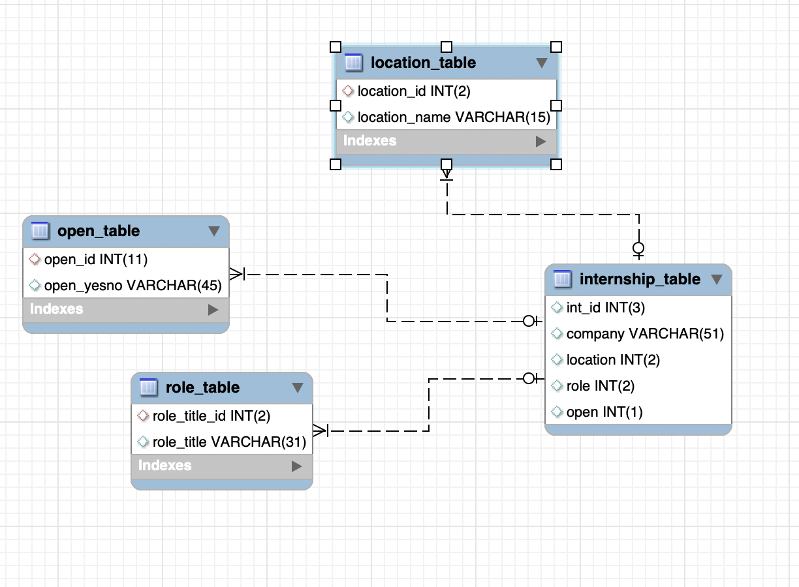

My website is an internship searcher, where users can input their desired location, role and company name to find internships that they would like to apply to. They can also choose between seeing currently open or closed internships. Users can also change the status of an internship (open or closed), as well as add to or delete from the internship database. Any such changes are immediate, and can be seen by the user when they search for the interships again.
The source of my data was the Summer 2023 Tech Internships by Pitt CSC Github repo. I took nearly all of the internships listed on this website and created my database out of it. I used 4 separate tables to create the database - internship_table, which contains all of the normalized internship data (name, id, location, role, status), and the other 3 tables were for the normalization of the location, role, and status information.
There are over 500 internships in the database. In order to make all of the internships appear more neatly and on separate pages rather than all 500+ on one, I implemented pagination. Specifically, I made it so that only 15 internships would show up on a page at a time. The user is able to navigation back (<<), forward(>>) or jump to the first and last pages of the internships. To make things more convenient, I put the pagination navigation on both the top and bottom of the page, so the user doesn't have to scroll all the way back up to the top of the page to navigate to the other internship pages.
Since I'm a fan of quotes myself, I implemented the ZenQuotes API that allows users to retreieve up to 50 current inspirational quotes from various authors based on an entered keyword. The API supports specific keywords, so if the user does not enter a valid keyword, an alert pops up that asks the user to choose from a list of valid ones. Once they do, a table pops up with all the retrieves quotes for that keyword.
This is the first page of the website, where the user can select to either search through internships, add, delete, or edit an internship. At the bottom of the page is the quote searcher, meant to give the user a pick-me-up/inspiration. They will enter a keyword, and click search. If the keyword is valid, a bunch of quotes (up to 50) will pop up with the author's name, picture, and quote. Otherwise, a window alert will let the user know that the keyword isn't supported, and will provide a list of valid ones to choose from.
Here, the user simply searches through the database. None of the fields are required. The drop-down options are programmatically populated from options in the database. When the user submits the form, all of the matching internships will pop up, displaying the total number, the pagination, and orange/yellow "cards" displaying the company name, role title, location, and status (open/closed).
These sections are quite similar. A user submits all the require form fields and that causes either the intership to be deleted from the database, or the status to change (from open to closed or closed to open).
This page adds an internship to the database, given all required form fields are submitted. The difference between this page and "Edit" and "Delete" is that the user has the option of inputting a role and location that do not already exist in the dropdowns. If they do, they MUST select "Other" from the dropdown, and they MUST type in the alternative location/role name. Once the form is successfully submitted, the internship is added to the database. If the user selected "Other" for either role or location, this makes it so that the new role or location is added to the location_table and role_table of the internship database. This means that when the user goes to search the new internship they just added, the search form dropdowns will now have the new role/location as an option!